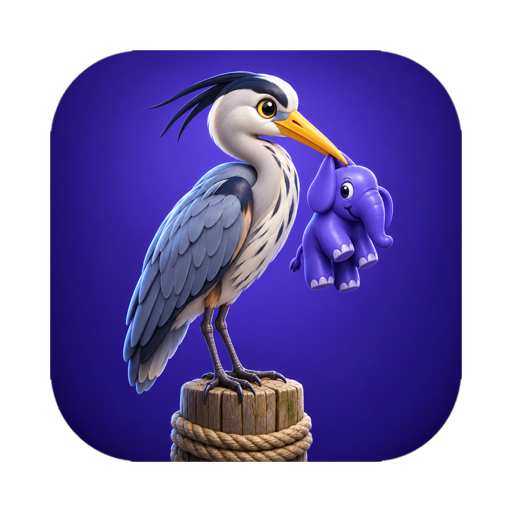
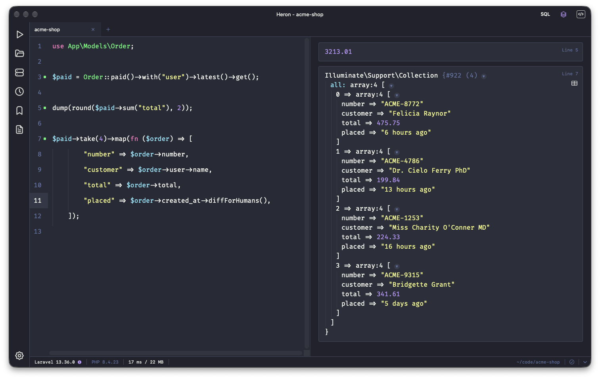

Heron is a scratchpad for PHP and Laravel on the Mac. Write a few lines, press ⌘R, and see every value as a card, with your models, config and database already loaded.
14-day free trial · macOS 15 or later · one license for two Macs

Open a project and the snippet runs inside it: Eloquent models, facades, config, the database. Plain PHP projects and no project at all work too.
Every dump() and the last expression become a card you can unfold, with a table view for lists of rows and CSV export.
Classes with their use line, columns, relations, scopes, functions and variables. Pick a callable and its parameters arrive as placeholders.
Save connections in groups, sign in with a password or key, and run the same snippet on production or staging, inside that project's PHP.
See the queries a snippet ran, and read storage/logs of the project or the connected server with level filters and search.
⌘R fixes indentation, spacing and missing semicolons first. Errors and warnings appear on their line.
One license, two Macs, every update for the year. Try it free for 14 days first — no account, no card.
Heron talks only to the servers you add and, once a week, to the license server. Your code never leaves your Mac. Passwords and keys stay in Keychain. No account, no analytics. Privacy policy.
Heron, Mac için bir PHP ve Laravel çalışma defteridir. Birkaç satır yazın, ⌘R'ye basın; her değer bir kart olarak gelir, modelleriniz, ayarlarınız ve veritabanınız zaten yüklüdür.
Projeyi açın, kod parçası onun içinde çalışır: Eloquent modelleri, facade'lar, config, veritabanı.
Bağlantıları gruplayarak kaydedin, parola ya da anahtarla girin; aynı kodu SSH üzerinden canlı sunucuda çalıştırın.
Modellerinizi bilen tamamlama, çalışan sorguların listesi ve projenin günlükleri tek pencerede.
Yılda 10 $ · 14 gün ücretsiz deneme · bir lisans iki Mac · macOS 15 ve üzeri